Design and size the right Foreman deployment for your environment before committing to installation. This guide covers architecture requirements, deployment scenarios, and deployment paths.
1. Deployment architecture requirements
Understand infrastructure requirements and deployment considerations to ensure your environment is properly configured before installing Foreman.
1.1. Supported usage of Foreman components
Usage of all Foreman components is supported within the context of Foreman only as described below.
- Foreman
-
You can extend Foreman with plugins packaged with Foreman. Foreman also includes components, configuration, and functionality to provision and configure operating systems other than Enterprise Linux.
- Pulp
-
Interact with Pulp only by using the Foreman web UI, CLI, and API.
Not supported: Direct modification or interaction with the Pulp local API or database. This can cause irreparable damage to the Foreman databases.
- Candlepin
-
Interact with Candlepin only by using the Foreman web UI, CLI, and API.
Not supported: Direct interaction with Candlepin, its local API, or database. This can cause irreparable damage to the Foreman databases.
1.2. Supported client architectures
Verify that your client architectures are supported before deploying Foreman.
1.2.1. Foreman operating system
You can deploy Foreman on the supported operating systems listed below.
-
Enterprise Linux 9 (x86_64)
-
Enterprise Linux 10 (x86_64)
Foreman community only packages Foreman for x86_64.
1.2.2. Client operating systems
Using Foreman, you can manage multiple operating systems that have Foreman clients.
You can use Foreman to manage clients that run the following operating systems:
-
Amazon Linux
-
Debian
-
Enterprise Linux 10, 9, and 8
-
Fedora
-
openSUSE/SUSE Linux Enterprise Server
-
Ubuntu
Foreman can integrate with the following client features:
-
Ansible
-
OpenSCAP
-
OpenSSH
-
Puppet
-
Salt
-
Windows Remote Management (WinRM)
-
Operating system installers that can perform unattended installations, such as Anaconda or Debian-installer
The Katello plugin provides functionality for content and subscription management. The following utilities are provided for supported client operating systems:
-
Katello host tools
-
Subscription Manager
-
Tracer utility
1.3. Networking considerations in Foreman
For the components of Foreman architecture to communicate, the required network ports must be open to enable incoming and outgoing traffic between the components. Identify firewall port and networking requirements to ensure Foreman components can communicate properly.
1.3.1. Smart Proxy server networking
The communication between Foreman server and hosts registered to a Smart Proxy server is routed through that Smart Proxy server. Smart Proxy server also provides Foreman services to hosts.
In a topology with hosts connecting to a Smart Proxy server, Smart Proxy server provides a single endpoint for all host network communications so that in remote network segments, only firewall ports to the Smart Proxy server itself must be open. Hosts do not need direct access to Foreman server.
In a topology with hosts connecting directly to Foreman server, hosts need direct network access to Foreman server. This applies to all Smart Proxy servers because they are hosts of Foreman server.
1.3.2. Foreman server port and firewall requirements
The following tables indicate the destination port and the direction of incoming and outgoing traffic for Foreman server.
| Destination Port | Protocol | Service | Source | Required For | Description |
|---|---|---|---|---|---|
443 |
TCP |
HTTPS |
Smart Proxy |
Foreman API |
Communication from Smart Proxy |
443 |
TCP |
HTTPS |
Client |
Global Registration |
Registering hosts to Foreman Port 443 is required for sending installed packages and traces, registration initiation, and uploading facts. |
443 |
TCP |
HTTPS |
Foreman |
Content Mirroring |
Management |
443 |
TCP |
HTTPS |
Foreman |
Smart Proxy API |
Smart Proxy functionality |
443, 80 |
TCP |
HTTPS, HTTP |
Smart Proxy |
Content Retrieval |
Content |
443, 80 |
TCP |
HTTPS, HTTP |
Client |
Content Retrieval |
Content |
5910 – 5930 |
TCP |
HTTPS |
Browsers |
Compute Resource’s virtual console |
|
8443 |
TCP |
HTTPS |
Foreman |
Smart Proxy API |
Smart Proxy functionality |
8443 |
TCP |
HTTPS |
Client |
Pull based REX (optional) |
Hosts for REX job notification (optional) |
9191 |
TCP |
HTTPS |
Client |
Salt (optional) |
Salt API |
| Destination Port | Protocol | Service | Destination | Required For | Description |
|---|---|---|---|---|---|
22 |
TCP |
SSH |
Target host |
Remote execution |
Run jobs |
22, 16514 |
TCP |
SSH SSH/TLS |
Compute Resource |
Foreman originated communications, for compute resources in libvirt |
|
80 |
TCP |
HTTP |
Remote repository |
Content Sync |
Remote repositories |
389, 636 |
TCP |
LDAP, LDAPS |
External LDAP Server |
LDAP |
LDAP authentication, necessary only if external authentication is enabled.
The port can be customized if |
443 |
TCP |
HTTPS |
Smart Proxy |
Content mirroring |
Initiation |
623 |
Client |
Power management |
BMC On/Off/Cycle/Status |
||
5000 |
TCP |
HTTPS |
OpenStack Compute Resource |
Compute resources |
Virtual machine interactions (query/create/destroy) (optional) |
5900 – 5930 |
TCP |
SSL/TLS |
Hypervisor |
noVNC console |
Launch noVNC console |
5985 |
TCP |
HTTP |
Client |
WinRM |
Configure Client running Windows |
5986 |
TCP |
HTTPS |
Client |
WinRM |
Configure Client running Windows |
9090 |
TCP |
HTTPS |
Client |
Discovery |
Smart Proxy sends reboot command to the discovered host (optional) |
8443 |
TCP |
HTTPS |
Smart Proxy |
Smart Proxy API |
Management of Smart Proxies |
1.3.3. Smart Proxy port and firewall requirements
The following tables indicate the destination port and the direction of incoming and outgoing traffic for Smart Proxy servers.
| Destination Port | Protocol | Service | Source | Required For | Description |
|---|---|---|---|---|---|
53 |
TCP and UDP |
DNS |
DNS Servers and clients |
Name resolution |
DNS (optional) |
67 |
UDP |
DHCP |
Client |
Dynamic IP |
DHCP (optional) |
69 |
UDP |
TFTP |
Client |
TFTP Server (optional) |
|
443, 80 |
TCP |
HTTPS, HTTP |
Client |
Content Retrieval |
Content |
443 |
TCP |
HTTPS |
Foreman |
Content Mirroring |
Management |
443 |
TCP |
HTTPS |
Foreman |
Smart Proxy API |
Smart Proxy functionality |
443 |
TCP |
HTTPS |
Client |
Host registration |
Initiation Uploading facts Sending installed packages and traces |
8443 |
TCP |
HTTPS |
Client |
Host registration |
Deprecated and only needed for Client hosts deployed before upgrades |
9090 |
TCP |
HTTPS |
Client |
Host registration |
Deprecated and only needed for Client hosts deployed before upgrades |
8443 |
TCP |
HTTPS |
Foreman |
Smart Proxy API |
Smart Proxy functionality |
8443 |
TCP |
HTTPS |
Client |
Register Endpoint |
Client registration with Smart Proxy servers |
8443 |
TCP |
HTTPS |
Client |
Pull based REX (optional) |
Hosts for REX job notification (optional) |
| Destination Port | Protocol | Service | Destination | Required For | Description |
|---|---|---|---|---|---|
22 |
TCP |
SSH |
Target host |
Remote execution |
Run jobs (optional) |
53 |
TCP and UDP |
DNS |
DNS Servers on the internet |
DNS Server |
Resolve DNS records (optional) |
53 |
TCP and UDP |
DNS |
DNS Server |
Smart Proxy DNS |
Validation of DNS conflicts (optional) |
68 |
UDP |
DHCP |
Client |
Dynamic IP |
DHCP (optional) |
443 |
TCP |
HTTPS |
Foreman |
Smart Proxy |
Smart Proxy Configuration management Remote execution result upload |
443 |
TCP |
HTTPS |
Foreman |
Content |
Sync |
443 |
TCP |
HTTPS |
Foreman |
Client communication |
Forward requests from Client to Foreman |
2. Deployment scenarios overview
Compare common deployment patterns to select the architecture that matches your infrastructure topology and organizational structure.
2.1. Single location scenario with segregated subnets
If your infrastructure requires multiple isolated networks in one geographic location, you can create segregated subnets and manage them with a single Smart Proxy.
Your infrastructure might require multiple isolated subnets even if Foreman is deployed in a single geographic location. This can be achieved for example by deploying multiple Smart Proxy servers with DHCP and DNS services, but the recommended way is to create segregated subnets using a single Smart Proxy. This Smart Proxy is then used to manage hosts and compute resources in those segregated networks to ensure they only have to access the Smart Proxy for provisioning, configuration, errata, and general management.
2.2. Multiple location scenarios
Create at least one Smart Proxy server per geographic location to save bandwidth by having hosts obtain content locally. Only your Smart Proxy server synchronizes content from remote repositories, making your provisioning infrastructure more reliable and easier to configure.
Foreman community recommends to create at least one Smart Proxy server per geographic location. This practice can save bandwidth since hosts obtain content from a local Smart Proxy server. Synchronization of content from remote repositories is done only by the Smart Proxy, not by each host in a location. In addition, this layout makes the provisioning infrastructure more reliable and easier to configure.
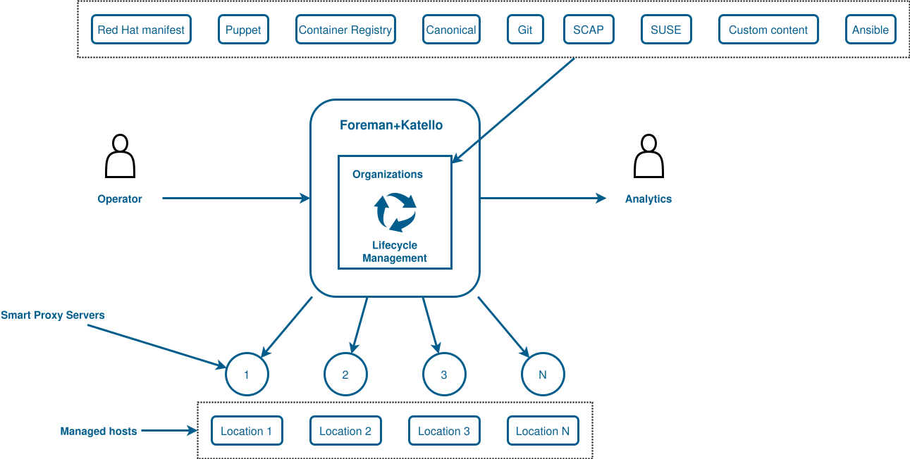
2.3. Content view scenarios
You can organize content views and lifecycle environments to match your workflow, from simple single-environment setups to complex application-specific paths that enable individual release cycles and testing before production deployment.
The following section provides general scenarios for deploying content views as well as lifecycle environments.
The default lifecycle environment called Library gathers content from all connected sources. It is not recommended to associate hosts directly with the Library as it prevents any testing of content before making it available to hosts. Instead, create a lifecycle environment path that suits your content workflow. The following scenarios are common:
-
A single lifecycle environment – content from Library is promoted directly to the production stage. This approach limits the complexity but still allows for testing the content within the Library before making it available to hosts.
-
A single lifecycle environment path – both operating system and applications content is promoted through the same path. The path can consist of several stages, which enables thorough testing but requires additional effort. For example, you can use the Development, QA, and Production stages.
-
Application specific lifecycle environment paths – each application has a separate path, which allows for individual application release cycles. You can associate specific compute resources with application lifecycle stages to facilitate testing. However, this scenario increases the maintenance complexity.
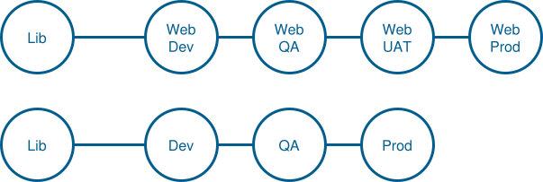
The following content view scenarios are common:
-
All in one content view – a content view that contains all necessary content for the majority of your hosts. Reducing the number of content views is an advantage in deployments with constrained resources (time, storage space) or with uniform host types. However, this scenario limits the content view capabilities such as time based snapshots or intelligent filtering. Any change in content sources affects a proportion of hosts.
-
Host specific content view – a dedicated content view for each host type. This approach can be useful in deployments with a small number of host types (up to 30). However, it prevents sharing content across host types as well as separation based on criteria other than the host type, for example, between operating system and applications. With critical updates every content view has to be updated, which increases maintenance efforts.
-
Host specific composite content view – a dedicated combination of content views for each host type. This approach enables separating host specific and shared content, for example you can have dedicated content views for the operating system and application content. By using a composite, you can manage your operating system and applications separately and at different frequencies.
-
Component based content view – a dedicated content view for a specific application. For example a database content view can be included into several composite content views. This approach allows for greater standardization but it leads to an increased number of content views.
The optimal solution depends on the nature of your host environment. Avoid creating a large number of content views, but keep in mind that the size of a content view affects the speed of related operations (publishing, promoting). Also make sure that when creating a subset of packages for the content view, all dependencies are included as well. Note that Kickstart repositories should not be added to content views, as they are used for host provisioning only.
2.4. Multiple manifest scenario
You can use many Red Hat Network subscription manifests in one Foreman server to manage systems from different Red Hat Network accounts or entities. This allows you to assign subscriptions to separate organizations and manage those organizations independently.
If you plan to have more than one Red Hat Network account, or if you want to manage systems belonging to another entity that is also a Red Hat Network account holder, then you and the other account holder can assign subscriptions, as required, to manifests. A customer that does not have a Foreman subscription can create a Subscription Asset Manager manifest, which can be used with Foreman, if they have other valid subscriptions. You can then use the multiple manifests in one Foreman server to manage multiple organizations.
The following diagram shows two Red Hat Network account holders, who want their systems to be managed by the same Foreman installation. In this scenario, Example Corporation 1 can allocate any subset of their 60 subscriptions, in this example they have allocated 30, to a manifest. This can be imported into the Foreman as a distinct Organization. This allows system administrators the ability to manage Example Corporation 1’s systems using Foreman completely independently of Example Corporation 2’s organizations (R&D, Operations, and Engineering).
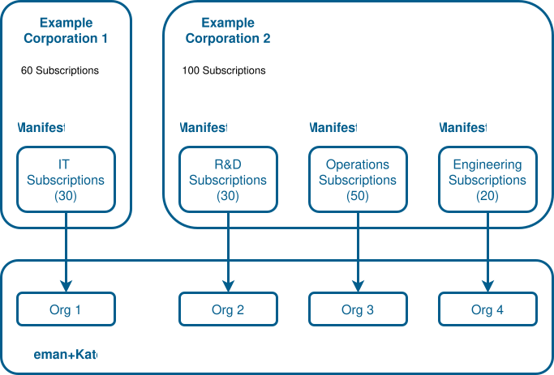
When creating a Red Hat subscription manifest:
-
Add the subscription for Foreman server to the manifest if planning a disconnected or self-registered Foreman server. This is not necessary for a connected Foreman server that is subscribed using the Subscription Manager utility on the base system.
-
Add subscriptions for all Smart Proxy servers you want to create.
-
Add subscriptions for all Red Hat products you want to manage with Foreman.
-
Note the date when the subscriptions are due to expire and plan for their renewal before the expiry date.
-
Create one manifest per organization. You can use multiple manifests and they can be from different Red Hat subscriptions.
Foreman allows the use of future-dated subscriptions in the manifest. This enables uninterrupted access to repositories when future-dated subscriptions are added to a manifest before the expiry date of existing subscriptions.
Note that the Red Hat subscription manifest can be modified and reloaded to Foreman server in case of any changes in your infrastructure, or when adding more subscriptions. Manifests should not be deleted. If you delete the manifest from the Red Hat Customer Portal or in the Foreman web UI it will unregister all of your hosts.
2.5. Host group structure scenarios
You can organize host groups by using flat, lifecycle environment-based, application-based, or location-based structures to simplify maintenance of host settings and match your workflow. Nested groups inherit parameters from parent groups.
The fact that host groups can be nested to inherit parameters from each other allows for designing host group hierarchies that fit particular workflows. A well planned host group structure can help to simplify the maintenance of host settings. This section outlines four approaches to organizing host groups.
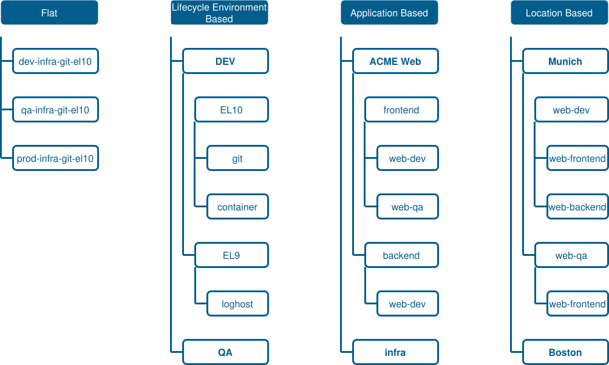
- Flat structure
-
The advantage of a flat structure is limited complexity, as inheritance is avoided. In a deployment with few host types, this scenario is the best option. However, without inheritance there is a risk of high duplication of settings between host groups.
- Lifecycle environment based structure
-
In this hierarchy, the first host group level is reserved for parameters specific to a lifecycle environment. The second level contains operating system related definitions, and the third level contains application specific settings. Such structure is useful in scenarios where responsibilities are divided among lifecycle environments. For example, if there is a dedicated owner for the Development, QA, and Production lifecycle stages.
- Application based structure
-
This hierarchy is based on roles of hosts in a specific application. For example, it enables defining network settings for groups of back-end and front-end servers. The selected characteristics of hosts are segregated, which supports Puppet-focused management of complex configurations. However, the content views can only be assigned to host groups at the bottom level of this hierarchy.
- Location based structure
-
In this hierarchy, the distribution of locations is aligned with the host group structure. In a scenario where the location or Smart Proxy server topology determines many other attributes, this approach is the best option. However, this structure complicates sharing parameters across locations, therefore in complex environments with a large number of applications, the number of host group changes required for each configuration change increases significantly.
2.6. Inter-Server Synchronization deployment scenarios
You can use Inter-Server Synchronization to synchronize content between Foreman servers, including air-gapped servers. In these scenarios, you copy selected content views or all Library content from an upstream server to downstream servers over a network or through physical export.
Foreman uses Inter-Server Synchronization (ISS) to synchronize content between two Foreman servers including those that are air gapped.
You can use ISS in cases such as:
-
If you want to copy some but not all content from your Foreman server to other Foreman servers. For example, you have content views that your IT department consumes from Foreman server, and you want to copy content from those content views to other Foreman servers.
-
If you want to copy all Library content from your Foreman server to other Foreman servers. For example, you have products and repositories that your IT department consumes from Foreman server in the Library, and you want to copy all products and repositories in that organization to other Foreman servers.
|
Note
|
You cannot use ISS to synchronize content from Foreman server to Smart Proxy server. Smart Proxy server supports synchronization natively. |
There are different ways of using ISS. The way you can use depends on your multi-server setup that can fall to one of the following scenarios.
In a disconnected scenario, there is the following setup:
-
The upstream Foreman server is connected to the internet. This server consumes content from the Red Hat Content Delivery Network (CDN) or custom sources.
-
The downstream Foreman server is completely isolated from all external networks.
-
The downstream Foreman server can communicate with a connected upstream Foreman server over an internal network.
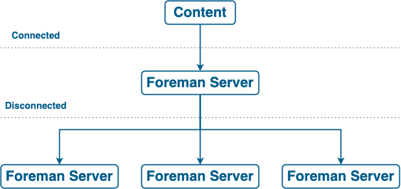
You can configure your downstream Foreman server to synchronize content from the upstream Foreman server over the network.
In an air-gapped scenario, there is the following setup:
-
The upstream Foreman server is connected to the internet. This server consumes content from the Red Hat CDN or custom sources.
-
The downstream Foreman server is completely isolated from all external networks.
-
The downstream Foreman server does not have a network connection to a connected upstream Foreman server.
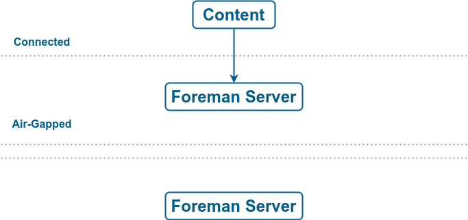
The only way for an air-gapped downstream Foreman server to receive content updates is by exporting payload from the upstream Foreman server, bringing it physically to the downstream Foreman server, and importing the payload.
You can configure your downstream Foreman server to synchronize content by using exports.
2.7. Foreman deployment scenarios on AWS
You can deploy Foreman server, Smart Proxy servers, and hosts in Amazon Web Services (AWS) using various configurations. Options range from simple single-region setups to multi-region deployments with VPN connections or direct connections between on-premises and cloud environments.
You can run Foreman server, Smart Proxy servers, and hosts in your Amazon Web Services (AWS) environment. You can deploy Foreman on Amazon Web Services (AWS) in several scenarios.
- One-region setup
-
This is the least complex configuration of Foreman in AWS. Deploy both Foreman server and the hosts residing within the same region and within the Virtual Private Cloud (VPC) You can also use a different availability zone.
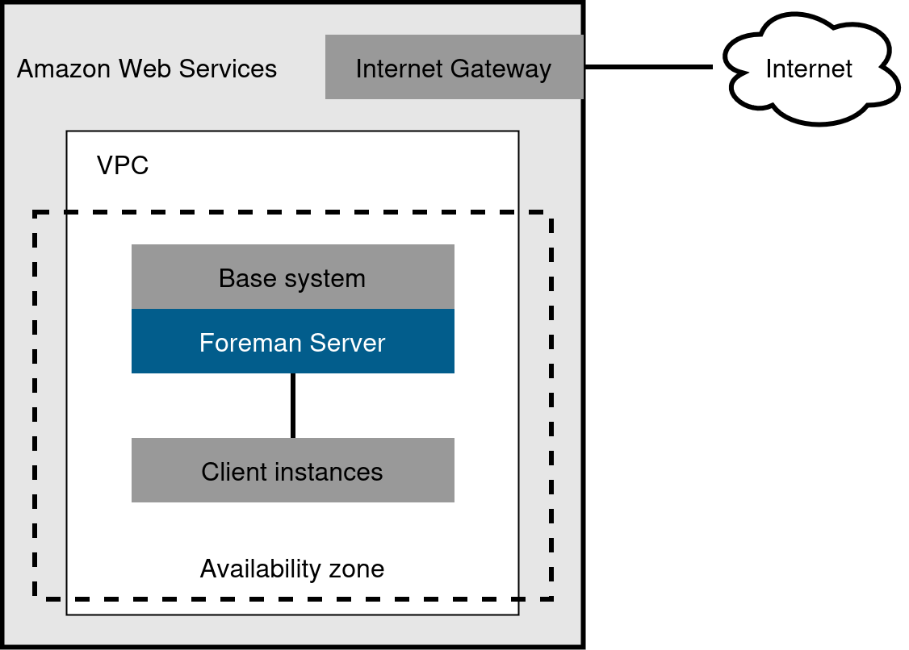
Figure 5. One-region setup - Connecting on-premises and AWS region
-
Create a VPN connection between the on-premises location and the AWS region where your Smart Proxy server is located. It is also possible to use the external host name of Foreman server when you register the instance that runs Smart Proxy.
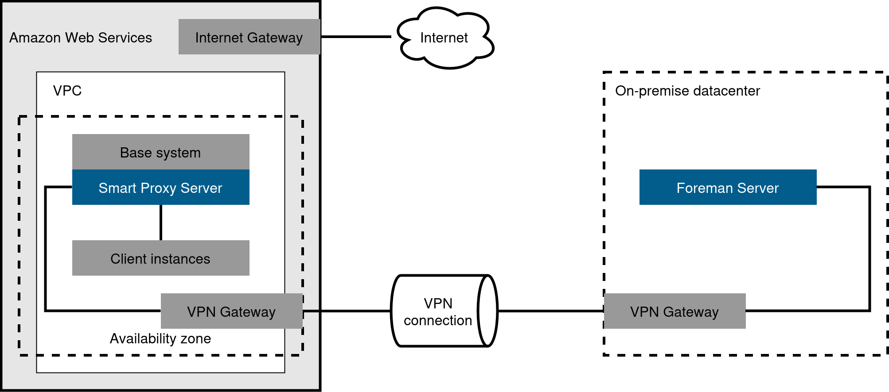
Figure 6. Site-to-site VPN connection between the AWS region and the on-premises data center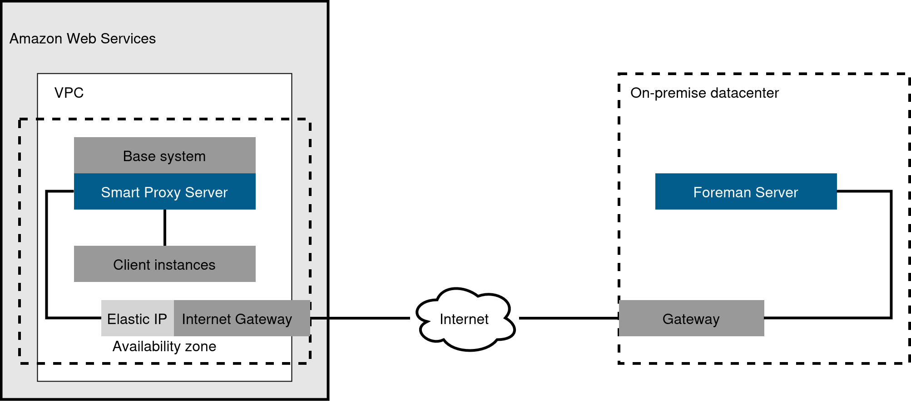
Figure 7. Direct connection using the external DNS host name - Connecting different regions
-
Create a site-to-site VPN connection between different regions so that you can use the internal DNS host name when you register the instance that runs Smart Proxy to Foreman server. If you do not establish a site-to-site VPN connection, use the external DNS host name when you register the instance that runs Smart Proxy to Foreman server.
NoteMost public cloud providers do not charge for data being transferred into a region or between availability zones within a single region. However, they charge for data leaving the region to the internet.
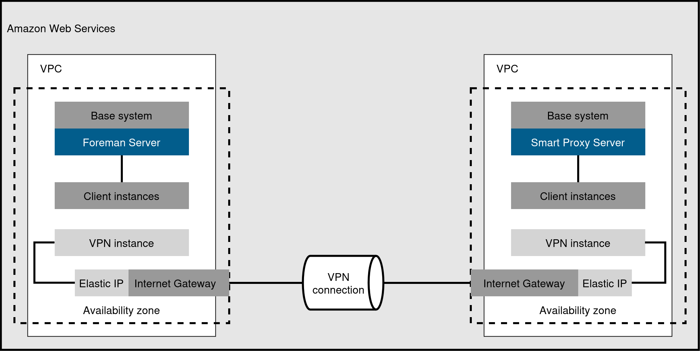
Figure 8. Site-to-site VPN connection between AWS regions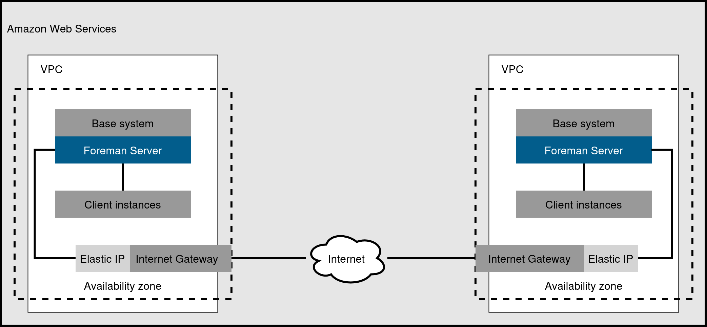
Figure 9. Direct connection using the external DNS host name
3. Deployment path for Foreman
During installation and initial configuration of Foreman, you can customize your deployment to fit your specific needs and operational environment. By customizing each stage of the deployment process, you can choose deployment options that meet the requirements of your organization.
3.1. Foreman server installation overview
Installing an instance of Foreman server on a dedicated server is the first step to a working Foreman infrastructure.
A default Foreman server installation includes installing PostgreSQL databases on the server. However, you can configure your Foreman server to use external databases instead. Moving to external databases distributes the workload and can reduce overall Foreman memory usage.
Consider using external databases if you plan to use your Foreman deployment for the following scenarios:
-
Frequent remote execution tasks. This requires a high volume of records in PostgreSQL and generates heavy database workloads.
-
High disk I/O workloads from frequent repository synchronization or content view publishing. This requires Foreman to create a record in PostgreSQL for each job.
-
High volume of hosts.
-
High volume of synchronized content.
3.2. External authentication methods available in Foreman
The authentication methods you can configure depend on the authentication source you are using. If the native authentication features provided by Foreman are not sufficient for your use case, use this information to decide which external authentication provider best suits your requirements.
Foreman includes native support for authentication with a username and password. If you require additional methods of authentication, configure your Foreman server to use an external authentication source.
| Username and password | Single sign-on (SSO) | One-time password (OTP) | Time-based one-time password (TOTP) | PIV cards | |
|---|---|---|---|---|---|
FreeIPA |
Yes (Linux and Active Directory users) |
Yes (Linux users only) |
No |
No |
No |
LDAP |
Yes |
No |
No |
No |
No |
3.3. Organization and location planning and assignment
Context in Foreman consists of organizations and locations. You can associate most resources, for example hosts, subnets, and domains, with at least one organization and location context.
Organizations and locations enable you to arrange Foreman resources into logically structured groups. For example, you can create groups based on ownership, purpose, content, or security level. You can create and manage multiple organizations through Foreman, then divide and assign subscriptions to each individual organization.
- Organizations
-
Organizations can represent different business units, departments, or teams, such as Finance, Marketing, or Web Development. To manage Red Hat content, each organization requires a separate Red Hat subscription manifest.
By creating organizations, you can create logical containers to isolate and manage their configurations separately according to their specific requirements.
- Locations
-
Locations can represent physical locations, such as countries or cities.
By creating locations, you can define geographical sites where hosts are located. For example, this is useful in environments with multiple data centers.
You can use locations to map the network infrastructure to prevent incorrect host placement or configuration. While you cannot assign a subnet, domain, or compute resources directly to a Smart Proxy server, you can assign them to a location.
Unlike organizations, locations can have a hierarchical structure. Resources and users can generally only access resources within their own context, which makes configuring organizations and locations an integral part of access management in Foreman.
Foreman server defines all locations and organizations. Each Smart Proxy server synchronizes content and handles configuration of hosts in a different location.
Your Foreman server retains the management function, while the content and configuration is synchronized between your Foreman server and Smart Proxy servers assigned to certain locations.
|
Important
|
If you use host groups to bundle provisioning and configuration information, avoid mismatching resources from mutually exclusive contexts. For example, setting a subnet from one organization or location and a compute resource from a different organization or location creates an invalid host group. |
The structure of a multi-national company includes the Finance, Marketing, and Sales departments. The company operates across United States, United Kingdom, and Japan.
The system administrator creates the following organizations on their Foreman server:
-
Finance
-
Marketing
-
Sales
Additionally, the administrator creates the following locations on their Foreman server:
-
United States
-
United Kingdom
-
Japan
The administrator can define a nested location hierarchy to divide the United States location into additional locations based on specific cities:
-
Boston
-
Phoenix
-
San Francisco
3.4. Smart Proxy servers installation overview
By installing Smart Proxy servers, you extend the reach and scalability of your Foreman deployment. You register each Smart Proxy server to Foreman server and configure it to provide the required services within your Foreman deployment.
You can install a Smart Proxy server in each of your geographic locations. By assigning a Smart Proxy to each location, you decrease the load on Foreman server, increase redundancy, and reduce bandwidth usage.
|
Note
|
The maximum number of Smart Proxy servers that Foreman server can support has no fixed limit. It was tested that a Foreman server can support 17 Smart Proxy servers with 2 vCPUs. |
Decide what services you want to enable on each Smart Proxy server. You can configure the DNS, DHCP, and TFTP services on one of your Smart Proxy servers or you can use an external server to provide these services to your Smart Proxy servers.
3.5. Content library and content access strategy
To ensure that your Foreman can manage software and provide it to your hosts, you create repositories and synchronize them. You can also define which hosts can access which content and content versions.
Your Foreman content library can include various types of content. Creating repositories allows you to choose the specific software required for your environment. By creating only the necessary repositories, you avoid downloading unnecessary content.
Synchronizing repositories downloads the content from Canonical, Oracle, Red Hat, SUSE, or other sources to your Foreman server. The synchronized content is stored on your Foreman server, eliminating the need for hosts to access the repositories. You can synchronize repositories manually, or you can create a sync plan to ensure synchronization runs on a regular basis.
By default, Foreman includes the Default Organization View content view and the Library lifecycle environment.
- Default Organization View
-
The Default Organization View is the default content view in Foreman that contains all the content that is synchronized to Foreman. After you update your content, such as by adding or removing a repository, the update is immediately reflected in Default Organization View.
- Library
-
The Library lifecycle environment is the default lifecycle environment in Foreman. Every newly published content view version is automatically published to the Library lifecycle environment. You can also promote specific content view versions to the Library lifecycle environment if needed.
In smaller deployments or when you do not require content versioning and environment promotion, you can associate a host to the Library environment under the Default Organization View without configuring additional lifecycle environments.
3.6. Role-based access control policies
You can define role-based access control policies to manage access to Foreman resources. A role-based access control policy is a set of rules that defines which users can access which resources and what actions they can perform on those resources.
Users in Foreman can have one or more roles assigned. These roles are associated with permissions that enable users to perform specified administrative actions in Foreman. Permission filters define the actions allowed for a certain resource type.
Foreman provides a set of predefined roles with permissions sufficient for standard tasks. You can also configure custom roles.
|
Note
|
One of the predefined roles is the Default role. Foreman assigns the Default role to every user in the system. By default, the Default role grants only a limited set of permissions. Be aware that if you add a permission to the Default role, every Foreman users will gain that permission. Assigning a different role to a user does not remove the Default role from the user. |
The following types of roles are commonly defined within various Foreman deployments:
- Roles related to applications or parts of infrastructure
-
For example, roles for owners of Enterprise Linux as the operating system as opposed to roles for owners of application servers and database servers.
- Roles related to a particular stage of the software lifecycle
-
For example, roles divided among the development, testing, and production phases, where each phase has one or more owners.
- Roles related to specific tasks
-
For example, you can create a role for security managers and a role for license managers, depending on the specific tasks users need to be able to perform within your organization.
3.7. Provisioning configuration in Foreman
After your basic Foreman infrastructure is in place, you can start configuring provisioning to ensure that Foreman can seamlessly create, configure, and manage hosts.
The provisioning process depends on whether you want to provision bare-metal hosts, virtual machines, or cloud instances, but it includes defining installation media, configuring provisioning templates, and other tasks. If you are provisioning virtual machines or cloud instances, you must also integrate your compute provider with Foreman by connecting the provider as a compute resource to Foreman.
The following Foreman features support automating the provisioning of your hosts:
-
Provisioning templates enable you to define the way Foreman installs an operating system on your hosts.
-
The Discovery service enables you to detect unknown hosts and virtual machines on the provisioning network.
This requires the Discovery plugin.
-
Host groups enable you to standardize provisioning of host configurations.
3.8. Subscriptions tracking configuration
For successful tracking of your subscriptions usage, you have to perform the following configuration tasks.
In both connected and disconnected scenarios, perform the following task:
-
Set the system purpose for hosts in Foreman.
In the connected scenarios, also perform the following tasks:
-
If you use a hypervisor with virtual machines, configure virt-who on Foreman server.
-
Configure inventory upload in Foreman and install the Insights client on hosts.
-
Activate the Subscriptions service in the Red Hat Hybrid Cloud Console if needed.
-
Monitor hosts by using Insights in Red Hat Hybrid Cloud Console
-
Activating and opening the subscriptions service in Getting Started with the Subscriptions Service
-
Monitoring hosts by using Insights in Red Hat Hybrid Cloud Console
-
Activating and opening the subscriptions service in Getting Started with the Subscriptions Service
3.9. Additional deployment tasks
Foreman offers a range of additional capabilities that you can use to further enhance your Foreman deployment.
- Remote execution commands on hosts
-
With remote execution, you can perform various tasks on multiple hosts simultaneously. Foreman supports the following modes of transport for remote execution: pull-based mode (over MQTT/HTTPS) and push-based mode (over SSH).
For more information, see Run automated workflows on hosts.
- Automating tasks with a configuration management tool
-
By integrating Foreman with a configuration management tool, you can automate repetitive tasks and ensure consistent configuration of your hosts.
You can use Ansible to configure hosts. For more information on using Ansible with Foreman, see Configuring hosts by using Ansible.
You can use Puppet to configure hosts. For more information on using Puppet with Foreman, see Configuring hosts by using Puppet.
You can use Salt to configure hosts. For more information on using Salt with Foreman, see Configuring hosts by using Salt.
- Security management with OpenSCAP
-
You can enable the OpenSCAP plugin on your Foreman server and any Smart Proxy servers. With OpenSCAP, you can manage compliance policies and run security compliance scans on your hosts. After the scan completes, a compliance report is uploaded to your Foreman server.
For more information, see Managing security compliance.
- Load balancing
-
With load balancing configured on your Smart Proxy servers, you can improve performance on Smart Proxy servers while also improving performance and stability for host connections to Foreman.
For more information, see Configuring Smart Proxies with a load balancer.
- Preparing for disaster recovery
-
By preparing a disaster recovery plan, you can ensure the continuity of Foreman services in case of a disruptive event. This helps you restore your Foreman deployment to an operational state after an incident.
For more information, see Prepare for disaster recovery and recover from data loss.